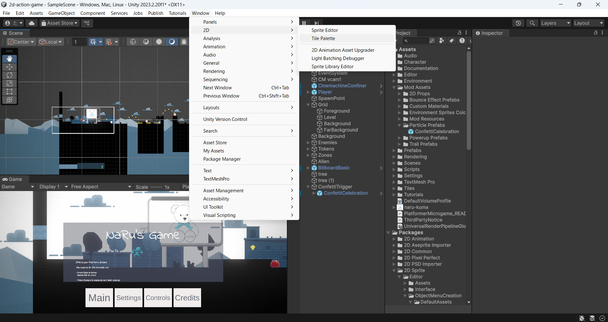
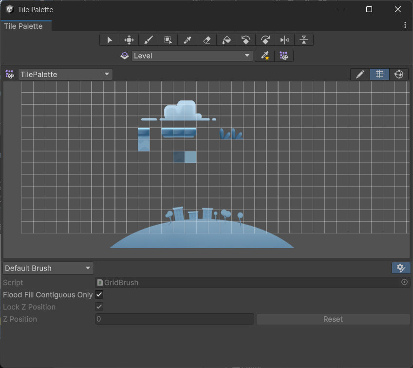
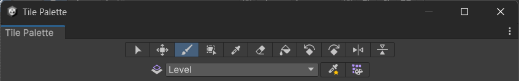
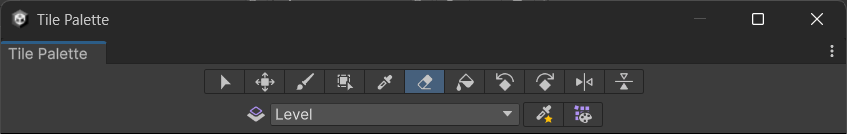
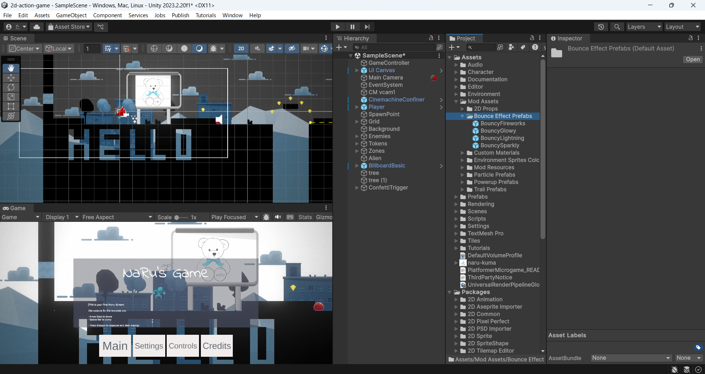
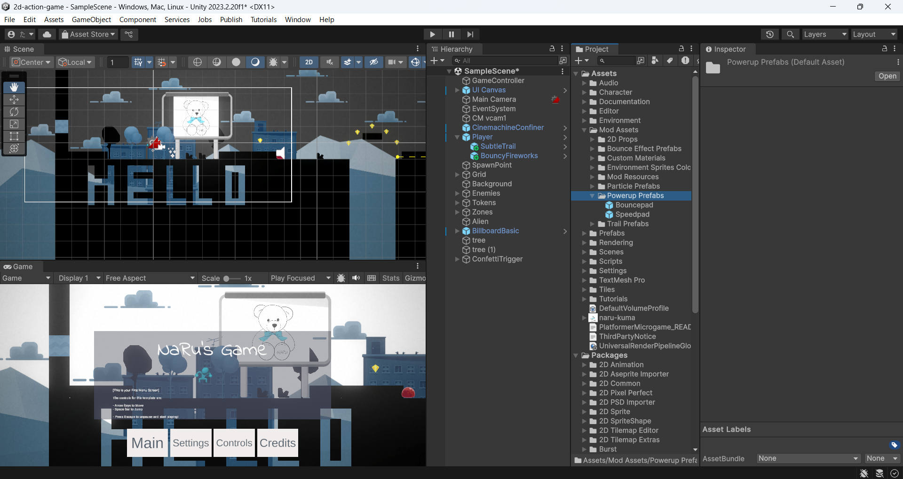
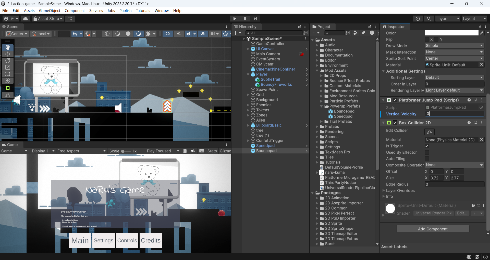

ステージを作りかえよう 〜タイルパレットとパワーアップ〜
🎯 この章でできるようになること
- タイルパレットを使って、ステージのブロックを自由にぬったり消したりできる
- プレイヤーが着地したときに火花などのパーティクル（エフェクト）を出せる
- Speed Pad・Bounce Padをステージに置いて、スピード感のあるコースを作れる
- プレハブのパラメータを調整して、ゲームの手ざわりを変えられる
今日はコードを1行も書かない回。エディタの操作だけで、いつものステージが「自分のステージ」に生まれ変わります。
まずはUnity Hubから、前回まで改造してきたPlatformer Microgameのプロジェクトを開こう。
5-1. タイルパレットってなに？
Platformer Microgameのステージは、じつは四角いブロック（タイル）を方眼紙のようなマス目に並べたものでできています。
このマス目がタイルマップ（Tilemap）、ブロックの見本がずらっと並んだ「絵の具のパレット」がタイルパレット（Tile Palette）です。
パレットから好きなブロックを選んで、スタンプのようにポンポンぬっていくだけでステージが作れるよ。
Platformer Microgameの地面や足場は、ぜんぶこのタイルマップでできている。
絵の具のパレットのように、ここからブロックを選んでステージにぬっていく。
5-2. タイルパレットを開こう
上部メニューの Window → 2D → Tile Palette の順に選ぶと、Tile Paletteウィンドウが開きます。

パレットをスクロールして、足場になるプラットフォームや雲のブロックを見つけよう。
AltOptionを押しながらパレットをクリックしてドラッグすると、パレットの中をスクロールできる- マウスホイールを回すと、パレットをズームイン・ズームアウトできる

ここからぬりたいブロックをクリックして選ぶ
5-3. ブロックをぬってステージを作りかえよう
Tile Paletteのツールバーで Paintbrush（筆）ツールを選択。
さらに Active Tilemap のドロップダウンで「Level」を選ぼう。
「どの筆で、どの方眼紙にぬるか」を決める操作だよ。

🚨 重要: Active Tilemapは必ず「Level」に！
Levelはあたり判定つきのタイルマップ。
ほかのタイルマップ（背景など）にぬると、見えてもプレイヤーがすり抜けてしまう。
パレットでぬりたいブロックをクリックして選んだら、Sceneウィンドウに戻ろう。
Sceneビューの中でクリック＆ドラッグすると、選んだブロックがどんどんぬられていくよ。
ぬりすぎたときは、Tile Paletteツールバーの Eraser（消しゴム）ツールを選択。
そのままSceneビューのブロックをクリック（またはドラッグ）すると消せる。

▶（Play）を押して、作りかえたステージを実際に走ってみよう。
ちゃんと新しい足場に乗れるかな？ 確認できたら、Playを止めて Ctrl + S⌘ + S でシーンを保存するのを忘れずに。
5-4. 着地で火花を散らそう 〜パーティクルの追加〜
次は、プレイヤーのアクションに目に見える手ごたえをつけます。
ジャンプして何かに着地した瞬間、火花のようなエフェクトが飛び散るようにしてみよう。
使うのはパーティクルシステムという、小さな粒をたくさん飛ばすしくみです。
今回は着地したときに自動で再生されるよう、設定済みのものを使うよ。
Projectビューで Mod Assets → Bounce Effect Prefabs フォルダの順に開く。
中に入っているパーティクルは、プレイヤーが何かに着地したときに再生されるよう事前に設定済み。好きなものを1つ選ぼう。

選んだBounce Effectを、ヒエラルキーの Player にドラッグする。
Playerの子オブジェクト（Playerの中）としてシーンにコピーが作られる。
プレイヤーにくっついて一緒に動くから、いつでも足元でエフェクトが出せるんだ。
▶（Play）を押して、ジャンプ→着地してみよう。
着地のたびにエフェクトが飛び散れば成功！
5-5. Speed PadとBounce Padを置こう
仕上げはパワーアップ床。踏むとダッシュする「Speed Pad」と、踏むと大ジャンプする「Bounce Pad」をステージに置いて、コースにスピード感とアクション性を足そう。
どちらもプレハブとして用意されているから、ドラッグするだけでOK。
シーンにドラッグするだけで、同じものを何個でも置ける。
Projectビューで Mod Assets → Powerup Prefabs の順に選ぶ。
中に Speedpad と Bouncepad のプレハブが入っているよ。

Speedpad のプレハブを選び、シーンにドラッグ。
プレイヤーがその上を歩ける場所なら、どこに置いてもOKだよ。
同じフォルダから Bouncepad のプレハブを選び、こちらもシーンにドラッグして置こう。
置いた Bouncepad を選ぶと、インスペクターに上方向に跳ね上げる強さ（Vertical Velocity）のパラメータがある。
ためしに 3 と入力してみよう。数字が大きいほど高く跳ぶよ。

▶（Play）を押して、Speed PadとBounce Padの上を歩いてみよう。
ビュンと加速して、ポーンと跳ね上がれば成功！
確認できたら Ctrl + S⌘ + S で保存しよう。
5-6. 💪 やってみよう
課題1: 自分だけのショートカットルートを作ろう
タイルパレットで足場を足して、うまくジャンプできた人だけが通れる「近道ルート」を作ってみよう。ふつうに進むより速いけど、ちょっとむずかしい……そんなルートが理想だよ。
ヒントを見る
雲のブロックを高いところに並べて空中ルートにしたり、Bounce Padを入口にして「大ジャンプしないと届かない足場」を作ったりできる。何度も自分であそんで、ギリギリ届く距離に調整しよう。
課題2: いちばん気持ちいいジャンプ力を探そう
Bounce Padの Vertical Velocity をいろいろな数字に変えて、あそびくらべてみよう。低すぎるとつまらない、高すぎると画面の外まで飛んでいっちゃう。「これだ！」という数字を見つけよう。
ヒントを見る
1 → 3 → 5 → 10 のように大きく変えてためすと、違いがわかりやすい。ちょうどいい範囲が見つかったら、そこから細かく調整しよう。
課題3（チャレンジ）: パワーアップコンボゾーンを作ろう
Speed PadとBounce Padを組み合わせて、「加速→大ジャンプ→着地で火花」が連続で決まる爽快ゾーンを作ってみよう。
ヒントを見る
Speed Padで加速した直後にBounce Padを踏むと、勢いのついた大ジャンプになる。ジャンプの着地点に次の足場を用意すると、リズムよく進めるコースになるよ。
5-7. 🚨 つまずきポイント集
Tile Paletteウィンドウが見つからない／閉じてしまった
直し方: Window → 2D → Tile Palette でいつでも開き直せる。ウィンドウはドラッグして好きな場所にドッキングできるよ。
ぬったはずのブロックが見えない／プレイヤーがすり抜ける
原因: Active Tilemapが「Level」以外になっていて、別のタイルマップにぬっている。
直し方: Tile Paletteの Active Tilemap を「Level」にしてぬり直そう。まちがえてぬった分は、同じタイルマップを選んだまま消しゴムツールで消せる。
消しゴムでこすっても消えない
原因: 消したいブロックがあるタイルマップと、Active Tilemapが一致していない。
直し方: Active Tilemap を、消したいブロックをぬったタイルマップ（ふつうはLevel）に切りかえてから消そう。
着地してもパーティクルが出ない
原因: Bounce EffectがPlayerの子オブジェクトになっていない（シーンの床などにドラッグしてしまった）。
直し方: ヒエラルキーを確認して、Bounce Effectが Player の中（子）に入っているかチェック。外にある場合は、ヒエラルキー内でドラッグしてPlayerの中に入れよう。
Bounce Padを踏んでも跳ねない／Speed Padで加速しない
原因: パッドが地面にめり込んでいる、または宙に浮いていて踏めていない。
直し方: Moveツールでパッドの位置を調整して、床の上にちょうど乗るように置き直そう。Bounce Padは Vertical Velocity が0や小さすぎる値になっていないかも確認。
Playを止めたら、置いたはずのパッドが消えた！？
原因: Playモード中にシーンをいじると、Playを止めたときに変更がぜんぶ元に戻るというUnityのルールがある。
直し方: ステージの編集は必ずPlayを止めてから。編集したら Ctrl + S⌘ + S で保存する習慣をつけよう。
💡 15分たっても直らないときは、次の「AIを味方につけよう」の方法で相談してみよう。
5-8. 🤖 AIを味方につけよう
今日の作業は「どこに・どうぬるか」「どこに置くか」の連続。
うまくいかないときは、「何をしようとして」「今どうなっているか」をセットで伝えると、AIが的確に助けてくれます。
この章でのAIの使い所
✅ 良い使い方 — 自分で15分考えてわからなかったら聞く
- 操作のつまずき: タイルがぬれない・消せない・パッドが反応しない、といった症状の相談
- レベルデザインの相談: 「むずかしすぎる」と言われたステージを、どう直せばいいかのアイデア出し
そのままコピペで使えるプロンプト（AIへの指示文）の例:
🚫 やめておこう
- 「おもしろいステージの形を考えて」と丸投げする（自分で作って自分でテストするのが今日の練習！）
- AIの答えをそのまま信じて、動かして確かめない（必ず自分の画面でPlayして確認しよう）
5-9. ✅ チェックリスト
全部チェックできたら第5章クリア！ 🎉 ステージの形もあそび心地も、もう「自分のゲーム」になってきたね。次は最終回、ワールドを飾りつけて発表に向けて仕上げよう。
5-10. 📚 もっと知りたい人へ
- Unity Learn — Unity公式の学習サイト。2Dゲーム制作のコースもあるよ
- Unity 公式マニュアル（日本語） — Tilemapやパーティクルシステムの詳しい仕様はここで調べられる